제품 FAQ
판피린 제품관련 FAQ
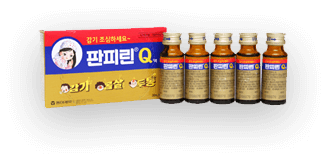-
장기복용해도 되나요?
판피린큐는 감기의 제증상을 완화시키는 종합감기약입니다. 감기 증상이 있을 때만 복용하시는 것을 권해 드립니다. -
두통약으로 복용해도 되나요?
판피린큐는 감기의 제증상인 두통에도 효과가 있습니다. -
판피린큐는 왜 5병씩 판매하나요?
일반의약품은 소비자에게 판매할때 판매단위에 기본정보가 모두 들어가 있어야 합니다. 판피린큐는 병라벨에 모든 정보를 넣을 수 없어 당사는 팩포장으로 생산, 포장에 모든 기본정보를 삽입하여 판매하고 있습니다.
챔프 제품관련 FAQ
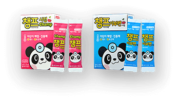-
챔프 시럽의 장점은 무엇인가요?
챔프 시럽은 무색소, 무보존제 어린이 해열제입니다. 5mL 포장의 1회용 어린이 해열제로 사용이 편리하며, 사용할 때마다 새로운 제품을 개봉하여 섭취할 수 있기 때문에 약효감소나 변질에 대한 염려가 적습니다. -
복용 후 남은 시럽은 어떻게 하나요?
가급적 사용하고 남은 것은 버리는 것이 좋습니다. 시럽제는 일반적으로 실온에서 보관하고 개봉하지 않았을 경우 성분에 따라 2~3년 정도 사용 가능하나, 개봉한 이후나 다른 용기에 나누어 옮겨 담은 경우에는 한 달 이상 먹이지 않도록 해야 합니다. (Reference. 어린이 감기약, 먹이기 전에 한번 더 확인하세오, 식품의약품안전처 보도자료, 배포일자: 2011.03.24) -
남은 약을 매번 버리게 되면 병포장보다 낭비 아닌가요?
아닙니다. 아이를 데리고 여행을 갈 때나 사용 빈도가 낮을 경우 병 포장 제품을 통째로 구비하는 것은 부담스러울 수 있습니다. 개봉했던 제품을 기간이 한참 지난 뒤 아이에게 다시 먹이기는 염려되어 다시 새 제품을 구입한 경험도 있으실 겁니다. 챔프 시럽은 매번 바로 개봉한 제품을 사용할 수 있어 오히려 낭비가 적습니다. -
챔프시럽과 챔프이부펜시럽의 차이는 무엇인가요?
챔프시럽(빨강)과 챔프이부펜시럽(파랑) 2제품 모두 해열제이지만 주성분에 있어 차이가 있습니다. 자세한 내용은 아래 이미지를 참고해주시기 바랍니다. 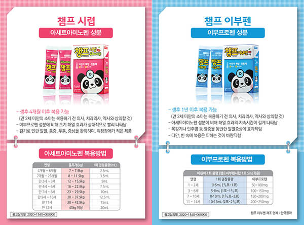
베나치오 제품관련 FAQ
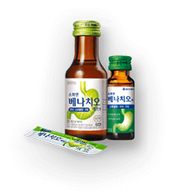-
베나치오액(20mL)와 베나치오에프액(75mL)는 어떻게 다른가요?
베나치오액(20mL)은 1회 복용용량이 베나치오에프액(75mL)보다 작아 휴대하기 간편하며, 많은 양을 마시기 어려운 분에게 좋습니다. 베나치오 75mL는 가루나 알약형태의 소화제와 함께 복용하기에 좋습니다. -
임산부가 복용해도 되나요?
생약 성분 중 현호색은 임산부에게 영향을 줄 수 있어 복용하기 전에 의사, 치과의사, 약사와 상의하시기 바랍니다.
노스카나 제품관련 FAQ
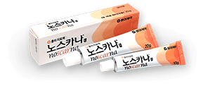-
언제부터 사용할 수 있나요?
노스카나는 흉터치료제로서 상처의 딱지가 떨어지고 아문 뒤 흉터에 사용합니다. -
어떻게 사용 하나요?
기초화장 전후 면봉 등을 사용하여 노스카나 겔을 흉터부위에 바르고 수시로 덧발라 주시면 됩니다.
멜라토닝크림 제품관련 FAQ
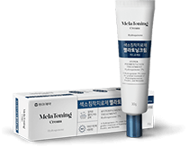-
어떻게 발라야 되나요?
침착된 부위만 국소적으로 톡톡 찍어 도포해주시기 바랍니다. (적용부위가 전체 피부의 10%를 초과하지 않도록) 별도의 면봉 없이 바르실 수 있습니다. -
바르는 순서가 있나요?
스킨케어 다음 단계에 멜라토닝을 톡톡 도포해주시면 됩니다. 외부 활동 중 사용 시에는 반드시 자외선 차단제를 마지막 단계에 도포해주셔야 합니다. -
얼마나 사용해야 하나요?
2개월간 꾸준히 사용해주시길 권장합니다. 단, 2개월 정도 사용 후 증상 개선이 전혀 없을 시 사용을 중지해주시기 바랍니다.
피임약 제품관련 FAQ
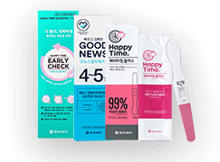-
피임목적으로 복용하는 방법 알려주세요.
생리 첫날부터 매일 일정한 시간에 21일간 복용해 주십시오. 처음 복용하시는 분은 복용 일주일간 보조피임(콘돔 등)을 병행해 주십시오. 21정 복용 후 7일간 휴약기를 가지고, 이후 새로운 패키지를 시작합니다. -
피임약 복용 중 생리기간이 아닌데 출혈이 있습니다.
피임약을 처음 복용하는 경우 3개월 동안은 불규칙한 출혈(부정출혈)이 나타날 수 있습니다. 이러한 부정출혈은 피임약의 호르몬 성분에 적응하는 과정에서 나타날 수 있는 증상입니다. 대부분 2~3개월 복용하게 되면 부정출혈이 없어집니다.그러나 초기 3개월 후에도 출혈이 지속되거나 양이 많아지면 의사 선생님과 상담하시기 바랍니다. -
피임약 성분이 몸에 쌓이지는 않나요?
먹는 피임약은 매일 복용해도 체내에 축적되지 않으며, 매일 분해됩니다. 따라서 피임제를 복용함에 있어 휴식기를 가질 필요는 없습니다. ※ 출처 : Family Planning - A global handbook for providers, 3rd edition. 2018, 3 page -
오래 먹으면 임신이 안되나요?
사전피임제는 복용 중단 후 임신 지연과 관련이 없습니다. 사전피임제 복용은 단기간, 장기간 생식능력에 부정적인 영향을 미치지 않습니다. 한 연구에 따르면 복용 중단 후 첫 번의 월경 주기에 임신할 확률은 21.1%, 1년 간 임신할 확률은 79.4%입니다. ※ 출처 : 피임제 상담 매뉴얼(의사용), 식품의약품안전처, 2016.05, 17page
아이봉 제품관련 FAQ
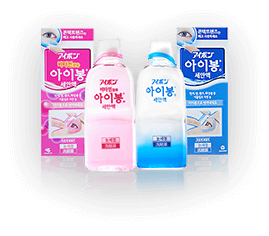-
개봉 후 얼마동안 사용할수 있나요?
사용기한은 미개봉 3년이지만 무보존제 제품이기 때문에 개봉후에는 가급적 2개월 내에 사용해주십시오. -
아이봉C 와 아이봉W의 차이점 알려주세요
아이봉W는 아이봉C에 비해 청량감이 강해 처음 사용하시는 분은 아이봉C를 권해 드립니다.
박카스 제품관련 FAQ
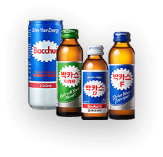-
박카스D와 박카스F 어떤 차이가 있나요?
박카스 D는 주성분인 타우린이 2,000mg 함유되어 있으며 100mL 용량입니다. 박카스F는 타우린 1,000mg와 DL-카르니틴염산염이 함유되어 있으며 120mL 용량입니다. 박카스디카페액은 카페인 성분이 없는 제품입니다. 박카스D는 약국에서, 박카스F는 편의점 등의 일반유통 경로에서 구입하실 수 있습니다. -
박카스 맛이 예전과 다르게 느껴집니다.
박카스를 마시기 전에 자극적인 음식을 드시면 싱겁게 느껴질 수 있습니다. 너무 차갑거나 미지근한 상태의 박카스 역시 평소보다 싱겁게 느껴질 수 있습니다. -
10병 박스에 1병이 부족합니다.
먼저, 박카스 박스의 밑바닥에 동그란 병 자국이 10개가 모두 나타나 있는지 확인해주십시오. 박스 밑바닥에 눌린 동그란 병자국이 10개가 모두 나타나 있다면 공장 출하 시에는 정상적으로 10병이 담겨져 있었으나 유통 중 또는 보관 중에 손실이 발생한 것입니다. 박스의 절취선을 따라 정상적으로 개봉하지 않고 박스 가운데의 홈을 밀어서 한 병씩 꺼내거나 다른 병을 넣을 수 있으므로 주의가 필요합니다. -
박카스를 자주 마시면 중독이 됩니까?
박카스는 타우린과 수용성비타민이 주요 성분입니다. 자주 복용하신다하여 중독이 되거나 내성이 발생하는 제품이 아니므로 안심하고 드십시오.
템포 제품관련 FAQ
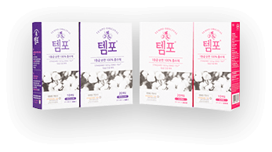-
템포를 사용하면 아프지 않나요?
템포 흡수체를 삽입한 후 이물감이 느껴지면 제 위치에 놓여지지 않은 것입니다. 이때는 삽입된 템포를 제거하시고 새로운 템포로 다시 시작해주십시오. 템포 흡수체가 정확한 위치에 삽입되면 이물감이 느껴지지 않습니다. 질내 2센티 안쪽으로 깊숙히 넣어주십시오. -
하루의 교환 횟수는 어떻게 됩니까?
템포의 교체시기와 횟수는 개인마다 차이가 있습니다. 보통 3~4시간마다 교체하며 생리양이 많은 날에는 1~2시간 이내에 교체합니다. 또한 교체시간은 8시간을 넘기지 않도록 주의해주십시오. 사용이 끝난 흡수체는 휴지통에 버려주십시오. -
수영장에서 사용해도 됩니까?
생리 양이 적은 경우 필요에 따라 수영장에서도 사용할 수 있습니다. 그러나, 사용이 미숙한 경우에는 어려움이 따를 수 있으니 탐폰류에 익숙해진 후 사용하시기를 권장합니다. 그리고, 교체 시기를 평소보다 자주하여 위생관리에 더욱 철저히 신경써 주십시오. -
독성쇼크증후군(TSS)은 무엇입니까?
독성쇼크증후군(TSS)은 인체 내에서 독소를 만들어 내는 포도상구균에 의해 발생되는 급성질환입니다. 초기 증상은 갑작스런 고열, 구토, 설사, 햇빛에 탄 것과 같은 발진, 점막 출혈, 어지러움 등이 나타나며 이경우, 즉시 치료받지 않으면 혈압 저하 등 쇼크 상태에 이를 수도 있습니다. 독성쇼크증후군이라고 생각되는 증상이 나타나는경우에는 즉시 탐폰을 제거한 후 의사와 상의해주십시오. -
어플리케이터가 몸 속에 들어갔는데, 어떻게 해야합니까?
깨끗한 손으로 직접 질내의 흡수체를 제거할 수도 있습니다만, 가급적 가까운 산부인과 병원진료를 통해 제거해주시기 바랍니다. 템포를 사용하기 전에는 번거로우시더라도 반드시 사용설명서를 모두 읽고 내용을 완전히 숙지하신 상태에서 사용하셔야 합니다. 손으로 잡고 있던 외통을 완전히 모두 밀어 넣으면 제거할 수 없는 상태가 되므로, 내통을 밀어 넣을 때에는 잡고 있는 외통이 완전히 몸 속에 들어가지 않도록 주의해주십시오. -
청소년은 어느 제품을 사용해야 하나요?
템포 사용에는 연령 구분이 없습니다. 생리양 많은 경우에는 슈퍼, 양이 보통이거나 적은 경우에는 레귤러를 권해 드립니다. -
템포와 템포 내츄럴은 무엇이 다른가요?
두 제품 모두 순면 제품이며 템포내추럴은 유기농※ 순면 제품입니다. ※ 인증기준 : OCS Blended / 인증기관 : Control Union / 인증번호 : CU832230
마스크 제품관련 FAQ
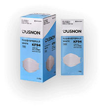-
개봉 후 얼마나 사용할수 있나요?
- 밀폐‧밀집‧밀접(3밀) 시설에서 사용한 마스크는 교체하는 것이 바람직합니다. - 땀이나 물에 젖은 마스크는 세균번식의 우려가 있어 새 마스크로 교체하는 것이 좋습니다. - 오염 우려가 적은 곳에서 일시적으로 사용한 경우 동일인에 한하여 다시 사용할 수 있습니다. ※ 출처 : 식품의약품안전처 공식 블로그(https://blog.naver.com/kfdazzang/222070422088, Accessed on 2020.12.21) -
KF94가 무엇인가요?
KF(Korea Filter)94는 분집포집효율 94% 이상, 안면부흡기저항 7.2mmH2O 이하 또는 70 Pa이하, 누설율 11% 이하인 제품을 뜻합니다.
비타민 제품관련 FAQ
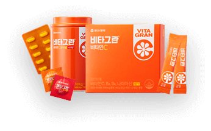-
천연비타민입니까?
옥수수전분에서 발효 추출한 합성비타민입니다. -
과량 복용할 경우 나타나는 부작용은 무엇입니까?
비타민C는 수용성 비타민입니다. 우리 몸에 필요한 양 이외에는 소변으로 배출되기 때문에 체내에 축적되지 않습니다. 과량을 복용할 경우에는 배탈, 설사, 속쓰림 등이 나타날 수 있습니다. -
1일 비타민C 섭취 권장량은 어떻게 됩니까?
19세 이상 성인의 1일 권장섭취량은 100mg이며, 1일 상한섭취량은 2,000mg 입니다. (Reference. 2020 한국인 영양소 섭취기준, 보건복지부·한국영양학회)
임신테스트기 제품관련 FAQ
-
희미한 두 줄이 나타났는데, 임신반응입니까?
"5분 이내"에 두 줄이 육안으로 확인되면 임신일 가능성이 높습니다. 최종 진단은 병원진료를 통해 확인해주십시오. -
5분이 지난 후에 나타난 선은 어떻게 판정합니까?
인체내에 분비되는 여러 종류의 호르몬들은 기본구조가 유사합니다. 그로인해 시간이 경과되면 hCG 단일클론항체와 다른 호르몬이 반응하여 검사밴드에 선이 나타날 수 있습니다. 5분 이후에는 이러한 호르몬들로 인해 임신여부와 무관하게 두줄의 선이 나타날 수 있습니다. 그러므로 5분 이내의 결과만 판독합니다. -
처음 검사에서는 임신반응이었으나, 며칠 뒤 다시 검사하니 비임신반응입니다.
모든 수태의 약 1/3은 수정, 착상과정에서 자연적으로 소멸됩니다. 이러한 경우, 임신 초기에는 임신결과를 나타내고 자연소멸 이후에는 비임신결과를 나타냅니다.약한 임신결과가 나타났을 경우에는 2~3일 후에 다시 검사하여 확인하시는 것이 좋습니다. -
양성반응이지만, 임신이 아닌 경우는 없습니까?
hCG를 함유하는 배란유도제 등 임신호르몬이 포함된 약물을 복용한 경우 임신이 아니지만 양성반응을 보이며, 기타 인체내의 비정상적인 임신호르몬 과다 분비의 경우에도 양성반응이 나타날 수 있습니다. -
종료선(C)과 검사선(T) 모두 전혀 나타나지 않았습니다.
소변이 과도하게 흡수되어 검사창의 시약이 씻겨지거나 흡수막대에 소변이 충분히 묻혀지지 않아서 발생할 수 있습니다. 이미 한번 사용한 진단키트는 재사용이 불가하므로 새제품으로 다시 검사해야 합니다. 정확한 결과를 위해 소변을 깨끗한 용기에 담아 5초간 적신 후 평평한 곳에 두고 5분 이내에 결과를 판독해주십시오.
비겐크림톤 제품관련 FAQ
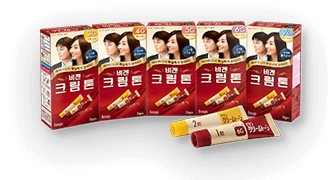-
염색이 잘 안되는 것 같아요.
젖은 모발, 손상된 모발에 염색을 하시면 염색이 잘 되지 않습니다. 잦은 파마와 드라이, 염색 등은 머리카락을 손상시킵니다. 또한, 이전에 사용했던 염모제보다 밝은 색상으로 염색하시면 염모가 잘 되지 않습니다. *참고로, 비겐크림톤은 흰머리를 검게 염색하는 백발 염모제이므로 검은 머리카락에 사용하시면 밝은갈색이나 자연갈색의 색상이 나오지 않습니다. 검은 머리카락의 컬러 변화를 원하신다면 백발염모제가 아닌 컬러염모제를 구입하셔야 합니다. -
부작용이 없는 제품인가요?
심각한 부작용은 없지만 개인에 따라 피부트러블 등의 부작용이 나타날 수 있습니다. 또한, 이전에는 아무런 부작용이 없었던 분도 몸 상태에 따라 부작용이 발생할 수 있으므로 염색을 하실 때마다 매번 피부테스트를 해주셔야 합니다. -
사용기한이 언제까지 인가요?
사용기한이 4자리 숫자(0000)로 표시된 경우에는 앞에서부터 순서대로 00년 00월 순입니다. 예를 들어 2012 이면 2020년 12월 말일까지 사용기한 제품입니다.
사용기한이 6자리 숫자(000000)로 표시된 경우에는 앞에서부터 00년 00월 00일 입니다. 예를 들어 201206 이면 2020년 12월 6일까지 사용기한 제품입니다. -
일본 수입품인데 방사능에 안전한가요?
비겐크림톤은 일본 방사능 사고 관련하여 안전성에 문제없이 안심하고 사용하실 수 있습니다. 일본 화장품공업연합회에서 후쿠시마 제 1 원자력 발전소 사고에 관련하여 화장품 등이 소비자의 건강에 영향을 주지 않는다고 발표하였습니다.